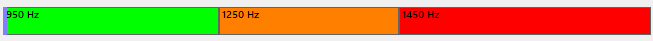

Program Whistle Mouse służy głównie do sterowania kursorem myszki za pomocą ‘gwizdania’.
Jest alternatywą do innych programów które umożliwiają sterowanie komputera bez używania rąk.
Program jest darmowy i rozpowszechniany z licencją open source.
Funkcje programu Whistle Mouse są w dużej części edytowalne. Ale program został przygotowany i skonfigurowany tak aby działał zaraz po uruchomieniu. Dalszy opis programu w dziale „Szybki Start” będzie odnosił się do właśnie do pierwotnej konfiguracji programu.
Szybki Start
W pierwszej kolejności należy uruchomić systemowe właściwości mikrofonu i wyłączyć opcje polepszania (np. redukcja szumów). Program działa najlepiej bez tych funkcji. (Znajdziesz je w panelu sterowania lub dedykowanej aplikacji od mikrofonu dołączanej do karty dźwiękowej)
Należy też zainstalować środowisko NET6.0
Zasada działania.
Program rozróżnia 3 zakresy częstotliwości. Najlepszy zakres ustawienia podczas testowania programu okazał się ( 800hz – 1700hz oraz podział 950,1250 i 1450 hz) i takie ustawienia są zastosowane (można edytować według własnych preferencji).

800hz 1700hz
Gwizdanie w zakresie ‘zielonym,pomarańczowym oraz czerwonym’ powoduje wybranie odpowiednio numeru :
Zielony - 1
Pomarańczowy – 2
Czerwony – 3
1 Ciągłe gwizdanie w zakresie zielonym porusza myszkę do tyłu
2 Ciągłe gwizdanie w zakresie pomarańczowym porusza myszkę do przodu.
3 Kilu sekundowe gwizdanie w zakresie czerwonym włącza lub wyłącza funkcję STAND-BY
- STAND BY włączony = brak symulacji myszki oraz włączony dźwięk
- STAND BY wyłączony = symulacja myszki oraz wyłączony dźwięk.
Włączony dźwięk np. piosenka zakłóca rozpoznawanie częstotliwości
12 – Gwizdanie w zakresie zielonym a następnie bez przerwy w zakresie pomarańczowym powoduje uruchomienie funkcji FLIP czyli zamianę poruszania się myszki z poziomu w pion lub odwrotnie
Czyli numer zielony 1 i pomarańczowy 2 = kod 12. Kod 12 to funkcja FLIP
21 - Gwizdanie w zakresie pomarańczowym a następnie bez przerwy w zakresie zielonym powoduje uruchomienie funkcji SCROLL czyli przewijanie strony.
Od tej pory ciągłe gwizdanie w zakresie zielonym lub pomarańczowym oznacza używanie scroll w przód lub w tył. Ponowne odgwizdanie 21 lub 12 spowoduje powrót do sterowanie kursorem.
Czyli numer pomarańczowy 2 i zielony 1 = kod 21. Kod 21 to funkcja Scroll.
32 – Kliknięcie lewego przycisku myszy
323 – Podwójne kliknięcie lewego przycisku myszy
3232 – Klikniecie lewego przycisku myszy i trzymanie.
321 – Kliknięcie prawego przycisku myszy.
121 – Kursor maksymalnie do tyłu
212 – Kursor maksymalnie do przodu
123 – Tool box. Tool box to dodatkowy zestaw funkcji dostępny z listy.
Sterowanie tool box : 1 – do tyłu, 2 – do przodu, 32 – enter, 323 - wyjście
Program jest w dużej mierze edytowalny. Po głębszym zapoznaniu się z działaniem programu będzie można pozmieniać funkcję według własnych preferencji
WYWOŁYWANIE FUNKCJI:
Domyślnie wywoływanie funkcji następuje przez gwizdanie w 1 zakres a następnie bez przerwy w inny zakres. Z moich testów wynika że jest to najprostsza metoda. I domyślnie tak są skonfigurowane funkcje np. klik myszki to 3 i następnie bez przerwy 2 .
Program obsługuje jeszcze jeden typ.
Przykładowo : Czerwony (3) PRZERWA i ponownie CZERWONY (3). Jest to metoda która wymaga wyćwiczenia.
Domyślnie jest ustawiona funkcja MOUSE_CLICK jako 111 – więc należy gwizdać (1 przerwa 1 przerwa 1).